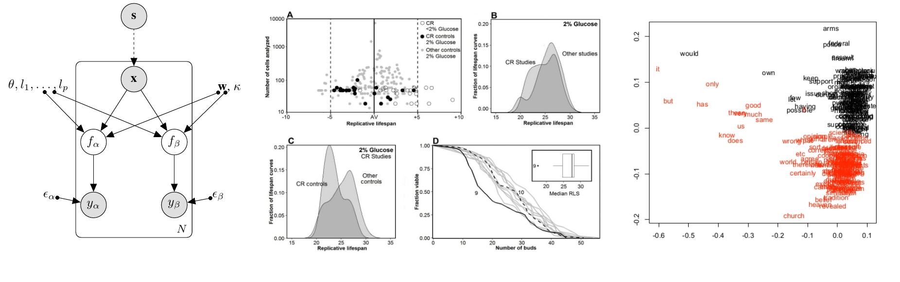

---- 2018 ----
- Babak M. S. Arani, Mahdi Mahmoudi, Leo Lahti, Javier Gonzalez and Ernst Wit. Stability estimation of auto-regulated genes under Michaelis-Menten
type kinetics . Accepted in Physical Review E, 2018.
---- 2017 ----
- Xiaoyu Lu, Javier González, Zhewen Dai and Neil Lawrence. Probabilistic Optimization with Latent Search for
Automatic Model Selection. NIPS Workshop in Bayesian optimization for Science and Engineering, 2017.
- Eero Siivola, Aki Vehtari, Jarno Vanhatalo, Javier González. Correcting boundary over-exploration deficiencies in
Bayesian optimization with virtual derivative sign observations. NIPS Workshop in Bayesian optimization for Science and Engineering, 2017.
- Rodolphe Jenatton, Cedric Archambeau, Javier González and Matthias Seeger. Bayesian Optimization with Tree-structured Dependencies. International Conference on Machine Learning (ICML'17).
- Javier González, Zhenwen Dai, Andreas Damianou and Neil Lawrence. Preferential Bayesian optimiztion. International Conference on Machine Learning (ICML'17).
- Eero Siivola, Aki Vehtari, Jarno Vanhatalo, Javier González. Bayesian optimization with virtual derivative sign observations, arXiv:1704.00963.
---- 2016 ----
- Javier González, Zhenwen Dai, Andreas Damianou and Neil Lawrence. Bayesian Optimisation with Pairwise Preferential Returns. The Neural Information Processing Systems (NIPS'16), Workshop in Bayesian Optimization, 2016
- Zhenwen Dai, Andreas Damianou, Javier González and Neil Lawrence. Variational Auto-encoded Deep Gaussian Processes. ICLR'16, 2016.
- Javier González, Michael Osborne and Neil D. Lawrence. GLASSES: Relieving The Myopia Of Bayesian Optimisation. JMLR W&CP (accepted for oral presentation in AISTATS'16), 2016.
- Javier González, Zhenwen Dai, Philipp Hennig and Neil D. Lawrence. Batch Bayesian Optimization via Local Penalization. JMLR W&CP (accepted in AISTATS'16), 2016.
- Javier González, Alberto Muñoz, Gabriel Martos Asymmetric latent semantic indexing for gene expression experiments visualization. Accepted in the Journal of Bioinformatics and Computational Biology, 2016
---- 2015 ----
- Javier González, Michael Osborne and Neil D. Lawrence GLASSES: Relieving The Myopia Of Bayesian Optimisation. The Neural Information Processing Systems (NIPS'15), Workshop in Bayesian Optimization, 2015.
- Javier González, Joseph Longworth, Josselin Noirel, Paul Dobson, Mark Dickman, David C. James and Neil D. Lawrence. In Silico Design of Synthetic Genes for Total Cell Translation Control: a Multi-output Gaussian Processes approach. The Neural Information Processing Systems (NIPS'15), Workshop in Computational Biology, 2015.
- Javier González, Zhenwen Dai, Philipp Hennig and Neil D. Lawrence. Batch Bayesian Optimization via Local Penalization. The Neural Information Processing Systems (NIPS'15), Workshop in Bayesian Optimization, 2015.
- Georges E Janssens, Anne C Meinema, Javier González, Justina C Wolters, Alexander Schmidt, Victor Guryev, Rainer Bischoff, Ernst C Wit, Liesbeth M Veenhoff, Matthias Heinemann. Protein biogenesis machinery is a driver of replicative aging in yeast. eLife, 2015.
- Gabriel Martos, Alberto Muñoz and Javier González. Level Sets Based Distances for Probability Measures and Ensembles with Applications. arXiv:1504.01664
- Javier González, Alberto Muñoz, Gabriel Martos Asymmetric latent semantic indexing for gene expression experiments visualization. arXiv:1504.01641
---- 2014 ----
Journal Papers
- Gabriel Martos, Alberto Muñoz and Javier González. Generalizing the Mahalanobis Distance via Density Kernels. Intelligent Data Analysis 18, 519-531, 2014.
- Daphne H. E. W. Huberts, Javier González, Sung Sik Lee, Athanasios Litsios, Georg Hubmann, Ernst C. Wit, and Matthias Heinemann. Calorie restriction does not elicit a robust extension of replicative lifespan in Saccharomyces cerevisiae. PNAS, Proceedings of the National Academy of Sciences , 2014.
- Ivan Vujacic, Ittai Dattner, Javier González and Ernst Wit. Time-Course Window Estimator for Ordinary Differential Equations Linear in the Parameters. Statistics and Computing, 2014.
- Javier González, Ivan Vujacic and Ernst Wit. Reproducing kernel Hilbert space based estimation of systems of ordinary differential equations. Pattern Recognition Letters, 45(1), 26–32, 2014.
Refereed Proceedings
- Javier González, Joseph Longworth, David James, Neil Lawrence. Bayesian Optimization for synthetic gene design. The Neural Information Processing Systems (NIPS'14), Workshop in Bayesian Optimization, 2014.
- Ernst Wit, Luigi Augugliaro, Fentaw Abegaz and Javier González. DgCox: a differential geometric approach for high-dimensional Cox proportional hazard models. (CIBB'14) Proceedings of the Eleventh International Meeting on Computational Intelligent Methods for Bioinformatics and Biostatistics, 2014.
---- 2013 ----
Journal Papers
- Javier González, Ivan Vujacic and Ernst Wit. Inferring latent gene regulatory network kinetics. Statistical Applications in Genetics and Molecular Biology. Vol. 12, Issue 1, pp. 109–127, 2013.
- Javier González and Alberto Muñoz. Functional Data Analysis techniques to improve similarity matrices in discrimination problems . Journal of Multivariate Analysis. 120, pp. 120–134, 2013.
- Daphne H. E. W. Huberts, Sung Sik Lee, Javier González, Georges E. Janssens, Ima Avalos Vizcarra and Matthias Heinemann. A microfluidic dissection platform for long-term imaging of dynamic cellular processes in budding yeast . Nature Protocols, 8, pp. 1019–1027, 2013.
Refereed Proceedings
- Javier González, Ivan Vujavcic and Ernst Wit. Reproducing kernel Hilbert space based estimation of ODE models in system biology. (PRIB'13) Proceedings of the Eighth IAPR International Conference on Pattern Recognition in Bioinformatics, 2013.
- Gabriel Martos, Alberto Muñoz, Javier González. On the Generalization of the Mahalanobis Distance. (CIARP'13). Progress in Pattern Recognition, Image Analysis, Computer Vision, and Applications. Lecture Notes in Computer Science, Volume 8258, pp 125-132, 2013.
- Alberto Muñoz, Gabriel Martos, Javier González. A New Distance for Data Sets in a Reproducing Kernel Hilbert Space Context. (CIARP'13)Progress in Pattern Recognition, Image Analysis, Computer Vision, and Applications. Lecture Notes in Computer Science , Volume 8258, pp 222-229, 2013.
- Ernst Wit, Ivan Vujacic, Javier González. Inference of non-linear ODE dynamics . (IWSM'13) Proceedings of the 28th International Workshop on Statistical Modelling , (Muggeo VMR, Capursi V, Boscaino G, Lovison G, editors), vol.2, pp. 465-474, 2013.
---- 2012 ----
Journal Papers
- Alberto Muñoz and Javier González. Hierarchical Latent Semantic Class Extraction Using Asymmetric Term Similarities. Behaviormetrika, Special issue on: Asymmetric multidimensional scaling. Vol 39, No.1, pp. 1-19, 2012
Refereed Proceedings
- Alberto Muñoz, Gabriel Martos, Javier Arriero, Javier González. A New Distance for Probability Measures based on the Estimation of Level Sets. (ICANN'12) Springer Berlin Heidelberg. Artificial Neural Networks and Machine Learning. Lecture Notes in Computer Science. Volume 7553, 2012, pp 271-278, 2012.
---- Before 2012 ----
Journal Papers
- Alberto Muñoz and Javier González. Representing Functional data with Support Vector Machines. Pattern Recognition Letters , 31(6) pp. 511-516, 2010.
- Javier González, Daniel Peña and Rosario Romera. A robust partial Least Squares Regression Method with applications. Journal of Chemometrics, 23, pp. 78-90, 2009.
Refereed Proceedings
- Alberto Muñoz and Javier González. Finite Dimensional Representation of Functional Data with Applications. (IFCS'10) Springer Berlin Heidelberg. Classification as a Tool for Research Studies in Classification, Data Analysis, and Knowledge Organization 2010, pp 157-165, 2010.
- Javier González and Alberto Muñoz. Combining Functional Data Projections for Time Series Classification. (CIARP'09) Springer Berlin Heidelberg. Progress in Pattern Recognition, Image Analysis, Computer Vision, and Applications. Lecture Notes in Computer Science. Volume 5856, 2009, pp 457-464, 2009.
- Alberto Muñoz and Javier González. Functional Learning of Kernels for Information Fusion Purposes. (CIARP'08) Springer Berlin Heidelberg. Progress in Pattern Recognition, Image Analysis and Applications. Lecture Notes in Computer Science . Volume 5197, 2008, pp 277-283, 2008.
- Javier González and Alberto Muñoz. Representing Functional Data using Support Vector Machines. (CIARP'08) Springer Berlin Heidelberg. Progress in Pattern Recognition, Image Analysis and Applications. Lecture Notes in Computer Science. Volume 5197, 2008, pp 332-339, 2008.
- Alberto Muñoz and Javier González. Joint Diagonalization of Kernels for Information Fusion. (CIARP'07) Springer Berlin Heidelberg. Progress in Pattern Recognition, Image Analysis and Applications. Lecture Notes in Computer Science. Volume 4756, 2007, pp 556-563, 2007.
- Javier González and Alberto Muñoz. Spectral measures for kernel matrices comparison. (ICANN'07) Springer Berlin Heidelberg. Artificial Neural Networks. Lecture Notes in Computer Science. Volume 4668, 2007, pp 727-736, 2007.
- Alberto Muñoz, Javier González and Isaac Martín de Diego. 2006. Local Linear Approximation for Kernel Methods: The Railway Kernel. (CIARP'06) Springer Berlin Heidelberg. Progress in Pattern Recognition, Image Analysis and Applications. Lecture Notes in Computer Science. Volume 4225, 2006, pp 936-944, 2006.
Book Chapters
- Alberto Muñoz, Javier González and Javier Arriero. Kernel Latent Semantic Analysis using Term Fusion Kernels. Support Vector Machines: Data Analysis, Machine Learning and Applications. NOVA Science, 103-116, 2010.
Thesis
- Javier González. Representing Functional Data in Reproducing Kernel Hilbert Spaces with Applications to Clustering, Classification and Time Series Problems. PhD Thesis, University Carlos III of Madrid, 2010.